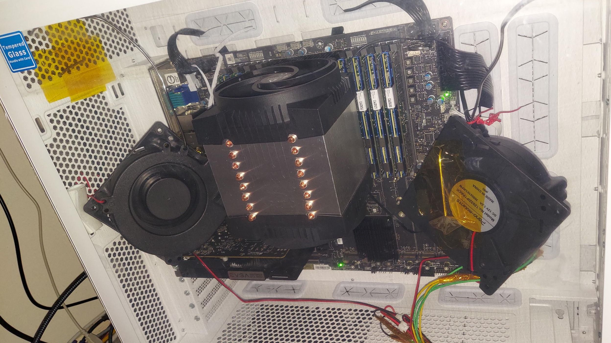

Пользователь Reddit-сабреддита r/homelab запустил Moonshot AI Kimi K3 (2,8 трлн параметров) на двухсокетной платформе с 40-ядерным Xeon Scalable третьего поколения — и ни одного GPU в инференсе. Вместо гигантского парка DDR-памяти роль «банки» играет Intel Optane Persistent Memory 200: планки на 128, 256 и 512 ГБ, которые Intel представила в 2020 году специально под эти Xeon'ы, а затем полностью похоронила направление. По словам автора, б/у Optane обошёлся «долей» от стоимости эквивалентного объёма DRAM — а цены на обычную память за последний год взлетели. Даже самое маленькое сообщественное квантование Kimi K3 требует минимум 610 ГБ ОЗУ, так что для домашней машины подержанный Optane — один из немногих способов вообще дотянуть до этой ёмкости.
При 1-битном квантовании сервер выдаёт 0,85 токена в секунду; при 3-битном — уже 0,75. В комментариях подсчитали: задача на 50 тысяч токенов займёт около 13 часов. Для сравнения, предыдущая сборка (модель K2.5 на 1 трлн параметров, Optane первого поколения плюс RTX 3060, помогавшая части слоёв) давала около 4 токенов в секунду. Второй builds' использует App Direct Mode — Optane виден как отдельная персистентная область, и софт сам решает, где лежат тензоры модели, — против Memory Mode в первой сборке. Цифры получены до тюнинга: автор обещает догнать GPU-ускорение и многоуровневую раскладку «DRAM поверх Optane».
Главное предупреждение автора: под длительной нагрузкой планки Optane разогреваются «экстремально» и могут вывести из строя соседние модули DRAM. Это согласуется со спецификацией Intel: модули рассчитаны на обдув 2,4–2,7 м/с — типичный датацентровый поток воздуха, — потребляют 12–15 Вт каждый независимо от объёма, троттлят при 83 °C и аварийно отключаются при 85 °C. Четыре планки — это до 60 Вт тепла вплотную к оперативной памяти. Автор решает вопрос двумя 12-ваттными турбинами (blower fans), направленными прямо на DIMM, и советует «считать активное охлаждение памяти обязательным». Отдельного официального анонса у компании здесь нет и не ожидается: это народная сборка, а не продукт, — но Moonshot действительно рекомендует для Kimi K3 датацентровые движки инференса, так что домашний запуск на снятом с производства железе выглядит вызовом, а не инструкцией.
История показывает обратную сторону ИИ-гонки: пока гиперскейеры строят кластеры на десятки мегаватт, сообщество доказывает, что фронтир-модель в 2,8 трлн параметров влезает в сервер 2020 года на мёртвой технологии памяти — медленно, горячо, но работает. На фоне дефицита и дорогущей DDR это и практический лайфхак для домашних лабораторий, и напоминание, сколько ещё жизни в «утильном» железе.